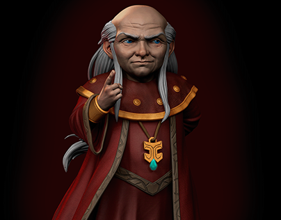

|  | BIOGRAFIA |
|---|---|
|
O Mestre dos Magos é um ser misterioso e sábio que guia o grupo de jovens no mundo de Caverna do Dragão.
Ele aparece e desaparece sem aviso, dando pistas enigmáticas e ensinamentos que ajudam os heróis a
enfrentar desafios. Apesar de parecer frágil e pacífico, é uma entidade extremamente poderosa e antiga,
profundamente ligada à magia e ao equilíbrio daquele mundo. Seu objetivo é orientar o grupo para que cresçam,
encontrem seu próprio caminho e, um dia, retornem para casa. | |
| ARMAS | |
|
Magia Arcana Suprema: Pode teletransportar, criar ilusões, prever eventos, conjurar feitiços e alterar a realidade de forma limitada, sempre guiando e protegendo os jovens. | |
| Habilidades | |
|
Teletransporte Instantâneo: Aparece e desaparece em qualquer lugar sem esforço. Conjuração Versátil: Usa magias de apoio, defesa, ilusão e orientação de forma extremamente precisa. Visão Profunda / Sabedoria Mística: Compreende ameaças, caminhos futuros e a verdade por trás dos eventos antes de todos. |